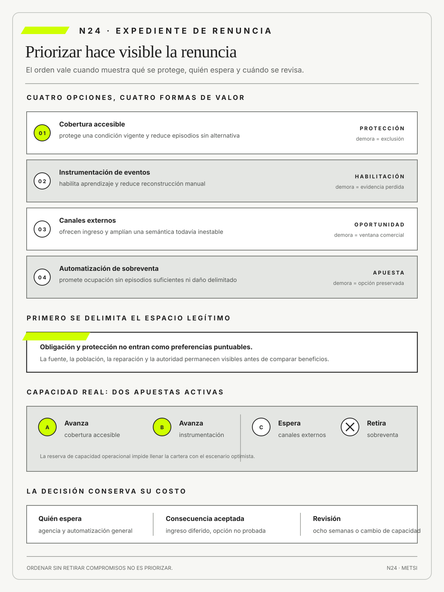

David Anderson
KanbanBlue Hole Press · 2010
Convierte límites, políticas explícitas y gestión evolutiva del flujo en decisiones observables de priorización.

Priorizar exige volver explícitas las renuncias y quién deberá esperar.
Priorizar es renunciar: valor, costo de demora y límites
Ruta priorizada: 1 h 20 min a 1 h 40 min. Núcleo de lectura: 60 a 75 min; preparación: 20 a 25 min. Las extensiones agregan 30 a 45 min y profundizan el recorrido.

Nota. SIN NUM. identifica aparatos de orientación y referencia.
Seis referentes y las obras principales utilizadas para construir N24.
Convierte límites, políticas explícitas y gestión evolutiva del flujo en decisiones observables de priorización.

Permite examinar costos de coordinación, contratación y dependencia al decidir qué compromisos sostener.

Explica cómo especificidad, dependencia y formas de gobierno condicionan el costo real de una alternativa.

Reconstruye procesos y demoras desde registros de eventos para contrastar prioridades con el flujo efectivo.

Vincula inversión incremental con hipótesis, evidencia y decisiones de continuar, cambiar o detener.

Advierte que todo modelo de puntuación depende de supuestos y propósito, aunque resulte útil para comparar.
N24 no resume estas fuentes ni las convierte en receta. Las pone en tensión para construir juicio profesional.
¿Cómo decidir qué no hacer cuando todas las iniciativas parecen valiosas y cada demora afecta a personas distintas?

Priorizar convierte la escasez en renuncias explícitas y conserva consecuencias en unidades pertinentes.
Un hospital reúne diecisiete pedidos para el siguiente trimestre. Cada área marca el suyo como crítico: turnos, farmacia, mantenimiento, seguridad, accesibilidad, reportes, integración y automatización. Una matriz asigna puntajes y termina con doce iniciativas casi empatadas. La dirección solicita mejorar la fórmula.
El problema no es falta de cálculo. Nadie declaró qué resultado prevalece, qué obligación limita la comparación, quién absorbe cada demora ni qué capacidad se libera al decir no. Cada fila describe algo valioso, pero no muestra qué alternativa desplaza. El orden numérico traduce juicios heterogéneos a una escala y deja intacto el desacuerdo.
Priorizar no consiste sólo en seleccionar el primer elemento. Consiste en limitar el conjunto activo, proteger condiciones que no admiten intercambio y aceptar que una opción valiosa quedará sin realizar. Esa renuncia produce efectos materiales. Postergar accesibilidad mantiene una exclusión; demorar mantenimiento aumenta riesgo; perder una oportunidad de automatización puede conservar capacidad para una obligación más urgente.
El equipo separa obligaciones, sostenimiento y apuestas. Las obligaciones establecen pisos que no compiten como funcionalidades opcionales. El sostenimiento protege capacidades existentes. Las apuestas comparan hipótesis de valor bajo incertidumbre. Dentro de cada grupo, el costo de demora se formula por escenario y no como un número universal. Una fecha legal, una temporada epidemiológica y una investigación pueden tener curvas temporales distintas.
La escasez relevante tampoco es sólo presupuestaria. Puede faltar atención de una autoridad, capacidad de prueba, conocimiento especializado, disponibilidad operativa o margen para absorber fallas. Un equipo financiado al cien por ciento puede carecer de capacidad porque atiende incidentes. Limitar trabajo en curso vuelve visible esa restricción y evita prometer una cartera que sólo cerraría si desapareciera la variabilidad.
Dos alternativas rivalizan. La primera maximiza cantidad de beneficios rápidos y posterga una corrección costosa de accesibilidad. La segunda protege esa obligación y renuncia a varias mejoras visibles. La decisión no se resuelve ocultando el conflicto en una ponderación. Debe declarar población, daño, oportunidad perdida, dependencia y autoridad que acepta la consecuencia.
La cartera también distribuye voz. Las áreas con mejor acceso a la conducción pueden presentar demandas como estratégicas; quienes absorben excepciones suelen llegar tarde. La revisión incorpora evidencia de pacientes y turnos, no como opinión decorativa, sino como información sobre consecuencias. Una prioridad defendible debe poder explicarse desde la perspectiva de quien espera y conservar una vía de objeción.
La decisión se revisa cuando cambia una obligación, una dependencia, la curva de demora o la capacidad disponible. No se reabre cada semana por presión ni se congela por haber sido aprobada. El registro conserva qué alternativa quedó postergada, qué señal anticiparía daño y quién puede pedir revisión. Así, la renuncia permanece visible y no se convierte silenciosamente en abandono.
N24 recibe cortes posibles de N23 y enseña a elegir entre ellos sin esconder renuncias detrás de urgencia, puntaje o jerarquía. La lista pendiente deja de ser un depósito infinito cuando cada decisión nombra qué no se hará, quién queda afectado, qué capacidad se protege y cuándo nueva evidencia obliga a revisar.
HH-23 dejó una secuencia abierta: ampliar a más turnos, sumar canales externos, reducir asistencia o incorporar otra excepción sin perder la capacidad completa. Al revisar esa secuencia junto con una nueva demanda, el equipo compara cuatro opciones de cartera: completar cobertura accesible en más turnos, instrumentar eventos para reducir asistencia, incorporar canales externos y automatizar la sobreventa.

Camila Duarte prioriza canales por ingreso; Federico Müller propone instrumentar la integración; Mariela Benítez exige completar accesibilidad y Lucía Ferreyra pide medir las reasignaciones que cada opción podría reducir. Llamar prioridad uno a todo sólo oculta el conflicto.
HH-24 distingue obligación, protección, outcome, aprendizaje y habilitación. La cobertura accesible recibe una clase de servicio protegida porque demorarla mantiene una exclusión y porque existe un compromiso institucional verificado. El testimonio de Mariela aporta evidencia operacional sobre esa exclusión; el registro de la posible fuente normativa permanece separado y pendiente de validación competente. La reparación de reasignaciones protege una promesa vigente. La integración de eventos habilita varios cortes. La ampliación comercial compite por la capacidad restante y debe declarar qué población esperará.
El expediente registra costo de demora, capacidad consumida, dependencia y reversibilidad. Elena Acosta limita el trabajo en curso a dos apuestas: completar cobertura accesible e instrumentar la evidencia que habilita expansión. La extensión a canales se pospone; una automatización de sobreventa se descarta hasta contar con episodios suficientes. Cada renuncia conserva razón, consecuencia y fecha de revisión.
El primer expediente compara cuatro opciones sobre un horizonte de ocho semanas. Completar accesibilidad evita una exclusión vigente y sostiene una protección institucional; no se presenta como cumplimiento normativo mientras la fuente jurídica continúe pendiente. Instrumentar eventos no produce por sí sola un resultado para el huésped, pero habilita evidencia y reduce retrabajo en varias capacidades. Incorporar canales promete ingreso y también amplifica una confirmación que todavía falla.
Automatizar sobreventa podría mejorar ocupación, aunque su mecanismo y sus daños distributivos no fueron probados. La comparación conserva esas formas de valor sin reducirlas a una unidad falsa.
Ricardo estima capacidad con episodios recientes. El equipo dispone de veinte jornadas teóricas, pero incidentes, soporte y revisión consumen entre seis y nueve. Prometer dos iniciativas grandes utilizaría el margen necesario para reparar el servicio. Elena acepta un límite de dos apuestas activas y reserva capacidad explícita. La decisión puede parecer menos ambiciosa en el tablero y aumenta la probabilidad de terminar una capacidad completa.
Camila cuestiona que la campaña quede postergada sin una estimación monetaria exacta. El equipo modela tres escenarios de demanda y declara supuestos. La oportunidad puede ser importante y no desplazar una protección de accesibilidad que evita una exclusión vigente. Tampoco desaparece: recibe una fecha de revisión, una señal de mercado y una condición operacional para ingresar. La renuncia se vuelve provisional, visible y vinculada con evidencia.
Mariela agrega una consecuencia que la matriz inicial no incluía. La instrumentación exige nuevas confirmaciones manuales durante dos semanas y aumenta la carga del turno. El plan se modifica para limitar pisos y preparar soporte. La dependencia habilitante deja de aparecer como infraestructura gratuita. Su costo para Operaciones forma parte de la prioridad y condiciona la secuencia.
Al cierre de la revisión, una falla de cerraduras consume parte de la capacidad reservada. El límite impide incorporar una tercera iniciativa y obliga a reestimar la fecha de la campaña. El expediente conserva qué cambió y por qué. No presenta la prioridad anterior como error, porque fue una decisión condicional bajo otra capacidad; tampoco la protege de la nueva evidencia.
La prioridad no se vuelve correcta por puntaje. Se vuelve defendible cuando otra persona puede reconstruir qué se protegió, quién asumió la espera y qué evidencia cambiaría el orden. Como cierre, HH-25 recibirá esta cartera limitada y los registros separados de evidencia operacional y fuente normativa para observar si el trabajo fluye o sólo cambia de columna en el tablero.
Una prioridad se puede defender cuando hace explícito a qué se renuncia, separa obligaciones y protecciones de las apuestas, y considera el costo de demora, la capacidad disponible y las consecuencias. Falla cuando un puntaje trata como equivalentes daños, oportunidades y dependencias, o cuando la urgencia oculta quién deberá esperar. Por eso hay que limitar el trabajo activo, asignar autoridad y fijar una fecha de revisión. Decir que no debe ser una decisión trazable, no una omisión silenciosa.
Para pasar de la idea a una decisión hace falta decidir qué recibe capacidad ahora, qué espera y qué no se hará, declarando criterio, restricción, costo de demora y población afectada. Así se distinguen descripción, explicación y compromiso, tres movimientos que suelen mezclarse. El resultado es una argumentación que otra persona puede revisar sin tener que aceptar la autoridad de quien la produjo.
Consideremos un ejemplo de baja escala: una obligación próxima y una mejora de conversión parecen ambas valiosas, pero fecha, reversibilidad y daño cambian el orden razonable. Seguirlo de punta a punta permite reconocer primero el fenómeno simple y luego las relaciones que vuelven insuficiente la explicación inicial. Esa es la progresión de lo general a lo particular que propone la colección.
La tesis no autoriza cualquier uso. Su contraejemplo es usar una fórmula de puntaje como autoridad neutral o mantener tantas prioridades que el WIP impide terminar cualquiera. Allí se vuelve visible que una técnica correcta puede ser inadecuada para cierto riesgo, población o momento. La calidad depende del uso, no del prestigio de la herramienta.
Aplicado a Hotel Horizonte, accesibilidad, eventos y canales externos compiten por capacidad; Elena, Camila y Lucía deben hacer explícitas renuncias y revisiones. La continuidad del caso permite comparar la nueva lectura con las anteriores y evita inventar una situación distinta para confirmar cada concepto.
De aquí se desprende una responsabilidad concreta: convertir postergación en decisión visible; N25 examinará WIP, colas, lote, espera y feedback. Profesores y estudiantes pueden discutirla con ejemplos, objeciones y evidencia; no necesitan memorizar una definición aislada ni aceptar una receta cerrada.
Una prioridad es defendible cuando protege límites, restringe el trabajo activo y conserva quién espera, qué consecuencia se acepta y cuándo se revisa.

N23 entrega capacidades utilizables, incertidumbres reducidas, dependencias todavía abiertas y poblaciones excluidas del primer corte. N24 convierte ese conjunto en opciones comparables y obliga a registrar qué se posterga, qué se protege y quién asume cada demora.
N25 recibirá una cartera limitada y estudiará cómo fluye realmente el trabajo. N24 no optimiza todavía colas, lote ni feedback en ejecución.
Las fuentes reúnen economía del flujo, teoría de restricciones, gestión de cartera, políticas kanban, servicios y límites normativos. Se usan para comparar demoras y capacidad sin convertir toda consecuencia en dinero ni permitir que un puntaje desplace obligaciones y derechos.
Reinertsen, D. G. permite comparar curvas de demora y tamaños de lote sin confundir una estimación económica con autoridad para intercambiar cualquier consecuencia.
Goldratt, E. M. y Cox, J. muestran cómo una restricción gobierna el desempeño del sistema.
Little, J. D. C. permite mostrar por qué una cartera que abre más opciones de las que su capacidad puede cerrar convierte prioridad nominal en espera acumulada.
Anderson, D. J. aporta políticas explícitas para limitar opciones activas y revisar su precedencia sin convertir el orden inicial en una promesa rígida.
Kersten, M. conecta financiación, producto y flujo de valor.
Project Management Institute ordena decisiones de cartera, valor y alineación.
Vacanti, D. S. aporta métricas de flujo para estimar previsibilidad sin borrar variabilidad ni convertir la estimación en promesa.
Kanban Guides ofrece un lenguaje operacional para clases de servicio, límites de trabajo y condiciones de entrada que vuelven ejecutable la renuncia de cartera.
DeBellis, D. et al. aportan evidencia sobre capacidades de entrega y desempeño.
ISO/IEC establece requisitos para gobernar sistemas de gestión de servicios.
OCDE orienta servicios públicos hacia necesidades y consecuencias humanas.
La Unión Europea impide tratar obligaciones y riesgos de inteligencia artificial como preferencias que un puntaje puede postergar.
Box, G. E. P. y Draper, N. R. aportan una advertencia para cualquier modelo de puntuación: una representación puede ser útil sin ser verdadera en sentido literal. El puntaje ayuda a examinar supuestos, pero no convierte escalas heterogéneas en una medida natural. Davenport, T. H. y Harris, J. G. vinculan analítica con decisión organizacional y recuerdan que un modelo sólo mejora una elección si sus datos, criterios y autoridad son comprensibles.
Mintzberg, H. y Waters, J. A. muestran que la estrategia también emerge de patrones de acción y aprendizaje, no sólo de un plan deliberado. McGrath, R. G. y MacMillan, I. C. incorporan la necesidad de asignar recursos bajo incertidumbre y revisar supuestos antes de comprometer escala. Ries, E. conecta esa revisión con hipótesis y evidencia, mientras Williamson, O. E. permite observar costos de coordinación, dependencia y gobierno que una estimación de beneficio puede omitir.
Coase, R. H. permite discutir cuándo el costo de coordinar dentro de la organización difiere del costo de contratar y depender de terceros. van der Aalst, W. M. P. aporta evidencia de proceso para reconstruir dónde se acumula espera y qué secuencia real contradice el mapa utilizado para priorizar.
Las fuentes no forman una fórmula universal. La teoría de colas explica por qué demasiadas opciones activas aumentan espera. El costo de demora ayuda a describir consecuencias temporales. La teoría de restricciones localiza capacidad que gobierna el sistema. La gestión de cartera organiza compromisos. Los marcos normativos establecen límites que no pueden intercambiarse. N24 integra estos aportes como preguntas complementarias.
La literatura reciente se utiliza para discutir una cartera donde inteligencia artificial aparece como promesa transversal. Una iniciativa puede ofrecer productividad y crear nuevos costos de verificación, seguridad o dependencia. El informe DORA señala que la asistencia amplifica las condiciones del sistema de trabajo. La regulación europea exige gobernar ciertos riesgos antes de perseguir beneficios. Por eso la prioridad no se decide por novedad tecnológica, sino por mecanismo, capacidad y consecuencia.
El primer movimiento transforma pedidos en opciones decisionales. Un pedido describe una necesidad o una solución deseada. Una opción agrega población, resultado, esfuerzo, dependencias, consecuencias de esperar y posibilidad de revisión. Esta traducción evita comparar frases de distinto nivel, como cumplir accesibilidad, mejorar conversión y construir una API, como si fueran unidades homogéneas.
La capacidad se mide sobre el sistema y no por suma de disponibilidad individual. Una tarea puede requerir a la misma persona que atiende incidentes, una ventana de prueba escasa o validación de una autoridad. Esos recursos crean colas aunque haya horas libres en otras funciones. El mapa identifica la restricción efectiva y evita financiar más trabajo de entrada cuando la salida no puede absorberlo.
La obligación se analiza antes del beneficio porque limita el espacio de opciones legítimas. No toda exigencia invocada como obligatoria posee la misma fuente. Puede provenir de una ley, un contrato, una política institucional o una decisión de diseño. HH-24 registra la fuente y su interpretación para evitar tanto subordinar derechos a un puntaje como declarar obligatoria cualquier preferencia poderosa.
El tiempo completa el mapa. Cada opción declara qué cambia si comienza ahora, en un mes o después de una fecha. La curva puede incluir pérdida de oportunidad, acumulación de daño, aumento de deuda o aprendizaje diferido. La precisión de la cifra se ajusta a la evidencia. Un rango con supuestos explícitos puede ser más útil que un valor único que nadie puede defender.
En simple: Prioridad es una relación de precedencia entre opciones bajo objetivos, recursos y límites concretos. No es una propiedad intrínseca ni una etiqueta de urgencia.
La decisión nombra qué avanza, qué espera y qué consecuencia se acepta. Puede cambiar cuando cambian evidencia, obligaciones o capacidad, por lo que conserva fecha y autoridad.
Ejemplo cercano: En Hotel Horizonte, accesibilidad precede a campaña porque protege una condición del servicio, no porque reciba más puntos.
La precedencia siempre posee una frontera. Accesibilidad puede preceder dentro de la capacidad compartida por ambas opciones y el mismo horizonte. No significa que toda tarea relacionada deba detener el resto del hotel. La decisión identifica el componente obligatorio y compara formas legítimas de cumplirlo.
Una prioridad necesita una condición de salida. Si completar accesibilidad permanece definido de forma ilimitada, puede bloquear cualquier otra opción. HH-24 formula una capacidad verificable y una fecha de revisión, de modo que proteger una obligación no se convierta en un programa sin frontera.
En simple: Renunciar es decidir no hacer, no ahora o no de esa manera y asumir sus efectos. Sin renuncia, ordenar una lista mientras todo sigue activo sólo oculta trabajo en curso.
El expediente identifica población afectada, costo de oportunidad y condición de revisión. También distingue postergación reversible de abandono que exige comunicación o reparación.
Ejemplo cercano: HH-24 registra que la campaña espera hasta estabilizar la promesa y muestra qué beneficio se demora.
La renuncia se expresa en una frase completa: durante seis semanas no se incorporará el canal externo, por lo que se posterga una estimación de reservas, para terminar cobertura accesible y observar estabilidad; la decisión se revisará con datos de demanda y operación. Esta estructura permite que una persona afectada reconozca qué se decidió y no encuentre sólo una posición inferior en una lista.
Algunas renuncias son irreversibles. Perder una ventana regulatoria, discontinuar una capacidad o dañar una relación no equivale a postergar. El expediente clasifica reversibilidad y exige mayor evidencia o una alternativa cuando la salida no puede deshacerse con facilidad.
En simple: Valor es una mejora relevante para actores y estrategia bajo condiciones determinadas. La misma opción puede crear valor para una población y trasladar costo o riesgo hacia otra.
No se reduce a ingreso, satisfacción ni volumen. Se formula junto con outcome, horizonte, obligación y distribución de consecuencias.
Ejemplo cercano: Reducir trabajo nocturno puede mejorar sostenibilidad y experiencia aunque no aumente de inmediato la cantidad de reservas.
El valor se formula desde varias perspectivas que pueden entrar en tensión. Para el huésped puede ser previsibilidad; para Recepción, capacidad de resolver; para la dirección, sostenimiento económico; para la comunidad, cumplimiento de condiciones justas. Una iniciativa no necesita maximizar todas, pero debe declarar cuál orienta la decisión y qué límites protegen a las otras.
La evidencia de valor aparece después del uso y puede contradecir el caso de negocio. Por eso la prioridad se revisa. Una opción que prometía ingreso puede perder apoyo si aumenta compensaciones o dependencia; una mejora operacional puede revelar un beneficio mayor al esperado. Valor situado implica una hipótesis, no una propiedad fija de la idea.
En simple: El costo de oportunidad es el valor de la mejor alternativa desplazada por una elección. Sólo existe en relación con opciones factibles bajo la misma capacidad y horizonte.
No equivale al presupuesto de la opción rechazada. Incluye aprendizaje, protección y capacidad que ya no podrán realizarse en ese período.
Ejemplo cercano: Si el equipo dedica el mes a una personalización, HH-24 muestra qué corrección accesible deja de hacer y quién espera.
El costo de oportunidad requiere alternativas factibles. Comparar una opción con un beneficio ideal sin capacidad para producirlo exagera la renuncia. El expediente utiliza opciones que compiten por el mismo recurso y horizonte y declara qué parte podría realizarse de otro modo.
El aprendizaje también posee costo de oportunidad. Elegir una entrega segura puede postergar una prueba que reduciría una incertidumbre decisiva. Esta pérdida no siempre puede monetizarse, pero debe aparecer porque afecta decisiones futuras y capacidad de adaptación.
El segundo movimiento evita que cada revisión de cartera comience desde cero. Las políticas establecen cómo ingresan opciones, qué obligaciones reciben tratamiento específico, qué límites existen y quién puede autorizar una excepción. No reemplazan juicio, pero reducen arbitrariedad y permiten auditar si dos demandas comparables recibieron un trato diferente.

Una política útil debe comprenderse antes de aplicarse. Las fórmulas que combinan beneficio, urgencia, riesgo y esfuerzo pueden ordenar conversación, pero sus pesos y escalas deben permanecer visibles. Si una variación pequeña de un supuesto cambia por completo el orden, la prioridad es sensible y necesita una decisión explícita, no una presentación como resultado objetivo.
Las clases de servicio permiten tratar diferencias reales sin convertir cada presión en excepción. Una obligación, una fecha fija, una urgencia y un trabajo estándar pueden tener políticas distintas. El sistema conserva límites para cada clase y registra el trabajo desplazado. De lo contrario, la vía rápida se transforma en la cola dominante.
La comparación incluye escenarios. HH-24 pregunta qué ocurre si baja la capacidad, si una dependencia demora, si cambia la demanda o si una protección se vuelve obligatoria. Una cartera que sólo cierra bajo el escenario optimista no constituye una priorización, sino una acumulación de compromisos condicionales presentada como plan.
En simple: El costo de demora expresa cómo cambia un beneficio o un daño mientras una opción espera. Puede ser lineal, crecer ante una fecha o perder valor gradualmente; la forma y el horizonte deben declararse.
Una cifra precisa sin evidencia fabrica autoridad. Se trabajan rangos, supuestos y poblaciones y se revisa la estimación cuando aparece nueva información.
Demorar una protección antes de temporada alta tiene otra consecuencia que hacerlo después del pico, aunque el esfuerzo técnico sea idéntico.
Ejemplo cercano: La forma de la demora puede ser lineal, escalonada, asociada a una fecha o incierta. Una multa contractual aparece después de un umbral; una oportunidad de mercado puede decaer; un riesgo de seguridad puede acumular exposición sin permitir predecir el momento del incidente. Representar la forma evita dividir beneficio por esfuerzo como si todas las semanas fueran equivalentes.
Esperar también puede producir valor al permitir obtener información, aprovechar una dependencia o evitar construir durante un cambio regulatorio. Para no alterar el significado habitual de costo de demora, HH-24 registra ese efecto por separado como valor de la opción de esperar. Luego compara el costo de postergar con ese valor, sin llamar costo negativo a fenómenos distintos ni transformar la espera en justificación indefinida.
Reinertsen (2009) aporta el análisis temporal de la demora; McGrath y MacMillan (2009) fundamentan el tratamiento de compromisos inciertos mediante opciones y aprendizaje.
En simple, con un ejemplo: Una clase de servicio define políticas de selección y tratamiento para tipos de demanda, como obligación, fecha fija, urgencia o trabajo estándar. No sirve para otorgar excepciones discrecionales.
Cada clase necesita criterio de entrada, límite, autoridad y regla de reposición del trabajo desplazado. Demasiadas urgencias destruyen la previsibilidad de todo el sistema.
Un incidente de seguridad puede adelantar trabajo si HH-24 registra qué opción se demora y cuándo recupera posición.
La clase urgente requiere criterio de salida y límite de simultaneidad. Si cada incidente mantiene abierta una iniciativa permanente, el sistema nunca recupera capacidad. La revisión distingue contención inmediata, reparación y mejora estructural, y asigna cada una a la política correspondiente.
Una fecha fija no es sinónimo de urgencia. Puede planificarse hacia atrás y recibir capacidad antes de que el costo de demora aumente. Confundirla con una interrupción tardía premia la falta de anticipación y perjudica al resto de la cartera.
En simple: Una obligación establece una condición que no puede tratarse como preferencia intercambiable. Derechos, seguridad y compromisos legales restringen el espacio antes de comparar beneficios.
La interpretación requiere autoridad y contexto; no toda política interna es una obligación externa. El expediente separa fuente, lectura y decisión de diseño.
Ejemplo cercano: La accesibilidad del servicio no compite por puntaje con una campaña, aunque existan varias maneras legítimas de realizarla.
El límite no decide automáticamente la solución. Puede haber varias intervenciones compatibles con la obligación y diferentes costos de oportunidad. La cartera compara esas alternativas dentro del espacio legítimo y conserva la fuente que justifica el límite.
Cuando obligaciones entran en tensión, el equipo no inventa una jerarquía. Escala a la autoridad competente, documenta interpretación y adopta una medida provisional que minimice daño. La trazabilidad protege contra usar el lenguaje normativo como argumento definitivo sin competencia para decidir.
En simple: Una dependencia habilitante es una capacidad cuyo avance permite o reduce el costo de varias opciones posteriores. No toda precedencia técnica merece recibir prioridad.
Se comprueba qué decisiones desbloquea, qué población protege y si existe una ruta alternativa. Priorizar una dependencia sin outcome puede financiar infraestructura indefinidamente.
Ejemplo cercano: Un contrato semántico común habilita canales y reportes sólo si los equipos pueden usarlo sin nueva conciliación.
La dependencia se prueba con consumidores concretos. Si sólo existe una afirmación general de que servirá a todos, puede convertirse en una plataforma sin resultado verificable. HH-24 identifica qué opción se desbloquea, cuánto trabajo evita y qué evidencia confirmará la habilitación.
Algunas dependencias pueden desacoplarse mediante una solución temporal. Esa alternativa tiene costo y deuda, pero puede permitir aprender antes. La prioridad compara construir primero la capacidad común con aceptar una ruta transitoria, sin presentar la secuencia técnica como necesidad natural.
El tercer movimiento trata la cartera como una hipótesis colectiva. Las prioridades fueron decididas con una capacidad, una demanda y una interpretación de valor que pueden cambiar. Revisar no significa reordenar toda la lista cada semana. Significa observar señales acordadas y modificar compromisos cuando la evidencia cruza un umbral o invalida un supuesto.
La cadencia debe equilibrar estabilidad y adaptación. Cambiar prioridades con cada solicitud destruye concentración y aumenta trabajo en curso. Mantenerlas por calendario a pesar de una obligación nueva o un mecanismo refutado protege el plan y no el resultado. HH-24 combina revisiones regulares con desencadenantes extraordinarios claramente definidos.
La gobernanza conserva la renuncia a lo largo del tiempo. Una opción postergada puede perder patrocinio y desaparecer del tablero sin una decisión explícita. El expediente registra estado, consecuencia acumulada y próxima revisión. Si finalmente se abandona, la autoridad comunica y atiende compromisos asociados.
La revisión también aprende sobre la política. Si la clase urgente se usa con demasiada frecuencia, si los puntajes no predicen consecuencias o si las dependencias se sobreestiman, no basta con cambiar una opción. Se modifica el mecanismo de priorización y se conserva por qué. La cartera mejora como sistema de decisión.
En simple: Capacidad disponible es el trabajo sostenible que el sistema puede absorber sin degradar operación, aprendizaje ni reparación. No coincide con horas contratadas ni con ocupación máxima.
Ejemplo cercano: Incidentes, variabilidad, mantenimiento y coordinación consumen capacidad aunque no aparezcan como iniciativa. Reservar margen reduce colas y protege respuesta.
HH-24 registra que el mismo equipo atiende cambios e incidentes y no promete el cien por ciento a la cartera.
La capacidad sostenible incluye descanso, aprendizaje y mejora del propio sistema. Considerar disponibles todas las horas que no están asignadas convierte cualquier variabilidad en incumplimiento. El margen no es ocio, sino una propiedad necesaria para responder sin crear colas explosivas.
La estimación se expresa como rango y se actualiza con datos de flujo. La diferencia entre capacidad teórica y efectiva se vuelve una evidencia para rediseñar demanda, soporte o responsabilidades, no una razón para exigir sobreesfuerzo permanente.
Capacidad disponible no tiene aquí el mismo significado que capacidad sociotécnica en N23. N23 pregunta si una organización puede completar y reparar un resultado bajo condiciones definidas. N24 pregunta cuánto trabajo simultáneo puede absorber de manera sostenible. El hotel puede poseer la capacidad de resolver una llegada accesible y, a la vez, carecer de margen para expandirla a tres canales durante temporada alta. La cartera debe preservar ambas afirmaciones sin deducir volumen a partir de posibilidad.
En simple: Un límite de trabajo en curso restringe cuántas iniciativas pueden permanecer activas simultáneamente. Hace visible que comenzar más no produce terminar antes.
Ejemplo cercano: El límite se aplica con políticas de entrada y excepciones y se ajusta mediante evidencia de flujo. Su función no es mantener personas ocupadas, sino reducir espera y dispersión.
El hotel mantiene un límite de dos apuestas activas y obliga a cerrar, detener o postergar una antes de incorporar otra. Las cuatro opciones permanecen visibles en cartera, pero sólo cobertura accesible e instrumentación consumen trabajo en curso.
El límite se aplica al outcome, no a la cantidad de tarjetas técnicas. Dividir una iniciativa en piezas no libera capacidad mientras el compromiso sigue abierto. HH-24 cuenta unidades que requieren atención y decisiones compartidas.
Las excepciones al límite deben mostrar qué trabajo se pausa. Permitir una urgencia sin retirar capacidad sólo aumenta inventario y demora. La visualización hace visible esa transferencia antes de aceptarla.
El límite se contrasta con datos y no se vuelve una cifra sagrada. Si dos apuestas pequeñas no compiten por el mismo recurso restrictivo, puede revisarse; si una sola iniciativa concentra validación, soporte y decisión ejecutiva, incluso dos pueden ser demasiadas. La Guía Kanban (Kanban Guides, 2025) vincula control del trabajo en curso con una definición explícita del flujo.
HH-24 conserva la frontera de cartera y N25 medirá luego si reducir compromisos abiertos disminuyó realmente espera o sólo ocultó demanda antes del punto de entrada.
Contar exige eventos claros. Una apuesta entra al trabajo en curso cuando recibe capacidad y una autoridad acepta su compromiso; sale cuando alcanza resultado, se detiene con decisión o se posterga liberando efectivamente los recursos. Pausar sólo el desarrollo mientras continúan validaciones, reuniones y consultas no reduce inventario. HH-24 registra fecha, estado y recurso todavía consumido para que el límite no se eluda dividiendo tarjetas, cambiando nombres o trasladando trabajo a Operaciones.
En simple, con un ejemplo: La Guía Kanban de mayo de 2025 organiza tres prácticas: definir y visualizar el flujo, gestionar activamente los elementos y mejorar el flujo. Esa definición es más exigente que disponer tarjetas en columnas. Obliga a declarar qué unidad se mueve, dónde comienza y termina, qué estados atraviesa, qué controla el trabajo en curso, qué nivel de servicio se espera y mediante qué métricas se revisará el sistema. Sin esas políticas, el tablero muestra actividad sin explicar por qué algo entra, espera o sale.
El compromiso marca una frontera decisiva. Antes de él existen opciones o demanda; después existe trabajo que consume capacidad y debe gobernarse. En HH-24 una solicitud comercial no ingresa porque alguien la rotuló urgente. Entra cuando una autoridad acepta su consecuencia, identifica el recurso restrictivo y muestra qué otra opción se posterga. Mover el punto de compromiso hacia adelante puede proteger foco, pero no reduce la espera total de quien demanda. Por eso N24 conserva visibles la cola previa y el trabajo activo.
Las clases de servicio son políticas para tratar tipos de demanda con consecuencias distintas. No son niveles de importancia personal ni carriles que garantizan rapidez. Una obligación con fecha fija, una reparación urgente y una mejora estándar pueden necesitar reglas diferentes porque cambia el costo de demora. Cada clase debe explicar criterio de ingreso, prioridad relativa, límite y efecto sobre lo ya comprometido. Una vía expedita sin costo visible convierte cualquier presión en excepción y destruye la capacidad de priorizar.
El límite de trabajo en curso funciona junto con esas políticas. Cuando aparece una urgencia real, la organización decide qué trabajo pausa o qué capacidad protegida utiliza. Si simplemente agrega la solicitud, el límite deja de gobernar. HH-24 registra el desplazamiento y conserva la fecha de revisión de la apuesta interrumpida. La renuncia deja así una huella verificable y no se disuelve en el lenguaje de flexibilidad.
Kanban tampoco resuelve por sí solo qué merece prioridad. Hace observables flujo, espera y reglas, pero valor, obligación, daño y poder necesitan otros argumentos. N24 utiliza esa visibilidad para discutir decisiones de cartera. Una mejora del flujo interno falla si excluye silenciosamente accesibilidad, traslada trabajo a Recepción o borra demanda antes del compromiso. El sistema mejora cuando termina más valor defendible con menos espera y no cuando el tablero parece más ordenado.
En simple: Gobernar cartera es revisar opciones, compromisos y renuncias como un sistema interdependiente. Integra estrategia, obligaciones, capacidad y evidencia sin reducir toda consecuencia a un único ordenamiento numérico.
La autoridad central necesita conocimiento local y voces afectadas; de otro modo, el orden reproduce visibilidad y poder. Cada decisión conserva responsable y efecto distributivo.
Ejemplo cercano: HH-24 puede detener una apuesta que aprendió poco para proteger otra que demuestra más outcome o evita un daño crítico.
La gobernanza necesita representación de voces afectadas y conocimiento de operación. Una decisión central basada sólo en casos de negocio privilegia beneficios visibles y subestima trabajo trasladado. Lucía y Mariela aportan episodios que cambian estimaciones de valor y capacidad.
La autoridad final no elimina desacuerdo. Registra qué criterio prevaleció, qué objeción permaneció abierta y qué evidencia la reactivaría. Esta memoria permite revisar sin reescribir el conflicto original.
En simple, con un ejemplo: Una prioridad no debería durar para siempre por simple costumbre. La fecha de revisión acuerda cuándo volver a mirar la decisión y con qué datos; por ejemplo, una mejora postergada por la temporada alta se reevalúa cuando baja la demanda. Una fecha de revisión impide convertir la prioridad actual en verdad permanente. Indica cuándo y con qué evidencia volverán a contrastarse supuestos, outcomes y renuncias.
Revisar demasiado seguido crea volatilidad; hacerlo tarde convierte postergación en abandono. La cadencia se ajusta a velocidad del cambio y costo de demora.
La campaña vuelve a evaluarse después del pico y de estabilizar la promesa, con datos que no existían al decidir la renuncia.
La fecha se acompaña con una pregunta decisional. No alcanza con volver a mirar; debe saberse qué opción podría ingresar, qué capacidad necesita y qué señal cambiaría la renuncia. Esa preparación protege contra una reunión que sólo confirma el orden vigente.
Algunas revisiones se activan por evento, como una norma, un incidente o la pérdida de un proveedor. El expediente combina fecha máxima y desencadenantes para evitar que una cartera estable ignore cambios de alto impacto.
La revisión compara la consecuencia prevista con la observada. Si instrumentación consume más validación de la estimada y no reduce reconstrucción manual, no conserva precedencia por haber sido habilitante en el papel. Si la opción de canales pierde su ventana comercial antes de la fecha prevista, la renuncia vuelve a evaluarse con el contrato y la capacidad disponibles.
Si aparece una nueva obligación de accesibilidad, no se inserta como urgencia genérica: se identifica su fuente, población, fecha y alternativa de cumplimiento. La política aprende de sus errores sin convertir cada señal en una replanificación completa.
El expediente mantiene un registro de movimientos. Iniciar, pausar, reducir, reanudar y abandonar son decisiones distintas. Pausar una apuesta libera trabajo en curso sólo cuando personas, ambientes y autoridades dejaron efectivamente de atenderla; mantener reuniones y consultas bajo otra etiqueta conserva el inventario. Reanudar exige comprobar que la evidencia y el costo de demora siguen vigentes. Esta memoria permite que N25 reconstruya tiempo y colas desde hechos, no desde la última posición de una tarjeta.
Project Management Institute (2017) aporta el gobierno de cartera como coordinación de componentes orientada a objetivos; N24 agrega límites distributivos y trazabilidad de la renuncia. Una autoridad puede elegir sin consenso, pero debe mostrar la fuente de una obligación, el recurso restrictivo, la alternativa desplazada y la fecha de revisión. La transparencia no elimina el conflicto. Permite que una objeción futura se compare con la decisión realmente tomada y no con una justificación reconstruida después.
HH-24 registra una precedencia junto con la renuncia que produce. Los campos separan obligación, valor, capacidad y costos de oportunidad y demora sin esconderlos dentro de un puntaje.
La prueba reduce capacidad o vuelve obligatoria una opción postergada. La decisión es auditable cuando muestra qué cambia, quién absorbe la nueva renuncia y cuándo se revisará.
El expediente se completa para cada opción antes de ordenar. Esto evita describir con detalle la alternativa favorita y resumir las demás mediante etiquetas. La unidad de comparación debe mantener una precisión semejante: población, resultado, horizonte, capacidad y dependencia. Cuando una opción conserva una incertidumbre mayor, esa diferencia queda registrada y no se compensa con una estimación inventada.
Las renuncias forman un segundo conjunto de registros. Una opción puede postergarse, reducirse, reemplazarse por otra intervención o abandonarse. Cada estado produce consecuencias distintas. Postergar preserva expectativa y exige fecha. Reducir modifica población o resultado y necesita explicar quién queda fuera. Reemplazar requiere mostrar por qué otro mecanismo atiende la misma necesidad. Abandonar cierra compromisos y comunica una decisión.
El costo de demora se expresa mediante escenarios y no como certeza. Para la campaña se modelan demanda baja, media y alta. Para accesibilidad se registran episodios de exclusión y una protección institucional que no depende de probabilidad comercial; su eventual fundamento normativo continúa en un registro separado. Para la deuda de integración se estiman retrabajo y opciones bloqueadas. El expediente conserva unidades diferentes y explica por qué algunas no deben agregarse.
La capacidad registra personas, ambientes, ventanas y autoridades críticas. Dos opciones pueden requerir el mismo equipo de desarrollo y competir en realidad por validación de Operaciones. Una iniciativa pequeña puede consumir una atención ejecutiva escasa. Identificar el recurso limitante permite construir secuencias y alternativas que una suma de jornadas no mostraría.
La decisión final incluye una prueba de sensibilidad. Se modifican los supuestos de beneficio, esfuerzo y demanda dentro de rangos plausibles. Si la precedencia se mantiene, el resultado gana robustez. Si cambia con facilidad, la autoridad no oculta esa fragilidad y puede elegir una prueba breve antes de comprometer. Box aporta aquí una disciplina: el modelo sirve para pensar las condiciones de la decisión, no para reemplazarla.
La persona que asume una renuncia revisa el registro. Camila puede cuestionar la estimación de oportunidad comercial; Mariela puede mostrar una carga omitida; Lucía puede aportar episodios de reparación. La participación no otorga veto a toda parte, pero mejora la representación y hace visibles consecuencias antes de ejecutar.
La versión completada de HH-24 conserva cuatro opciones sobre ocho semanas. Completar cobertura accesible en más turnos sostiene una protección institucional y reduce episodios sin alternativa. Instrumentar eventos no entrega valor directo al huésped, pero habilita aprendizaje y reduce reconstrucción manual en varias capacidades. Incorporar canales externos ofrece una oportunidad comercial cuya curva decae después de temporada y amplía una semántica todavía inestable.
Automatizar sobreventa promete ocupación, pero carece de episodios suficientes y puede aumentar reasignaciones. Las unidades no se suman en un puntaje común: protección, ingreso esperado, retrabajo y daño permanecen visibles.
La capacidad efectiva se expresa como un rango de once a catorce jornadas de las veinte teóricas. Validación de Operaciones constituye el recurso restrictivo y se reserva margen para incidentes. Cobertura accesible e instrumentación ingresan como las dos apuestas activas. La incorporación de canales externos queda postergada hasta que el contrato temporal y la reparación funcionen; sobreventa se descarta en esta ventana y requiere una hipótesis nueva.
La decisión identifica a Camila como responsable de la oportunidad postergada, a Mariela como fuente de evidencia operacional, a la autoridad competente como responsable de validar la posible fuente normativa, a Lucía como autoridad para detener una exposición y a Elena como autoridad de cartera.
El registro temporal evita otra falsa equivalencia. Para accesibilidad, cada semana conserva una exclusión que no se vuelve aceptable por baja frecuencia. Para canales, la oportunidad puede caer después del pico, pero esperar también permite obtener evidencia del contrato. Para instrumentación, la demora prolonga retrabajo y bloquea otras decisiones.
La fecha de revisión se fija antes de la temporada y se activa también ante un incidente severo o un cambio de obligación. Así, costo de demora, valor de esperar y condición de revisión se comparan sin cambiar de signo una misma variable.
Un hospital debe elegir entre mejorar una interfaz, reemplazar equipos, reforzar ciberseguridad y reducir demoras clínicas.
Una matriz única no puede hacer competir del mismo modo obligación, seguridad, outcome y aprendizaje. HH-24 separa límites y luego compara dentro del espacio legítimo.
La renuncia queda asociada a consecuencias y autoridad, no escondida en un puntaje.
En el hospital, reemplazar un equipo puede reducir riesgo clínico y requerir una interrupción planificada. Reforzar ciberseguridad puede proteger información y consumir la misma ventana técnica. Mejorar la interfaz puede disminuir errores y depender de capacitación ya saturada. Las opciones no compiten sólo por presupuesto. Comparten personal, ambiente, tiempo de validación y tolerancia a interrupciones.
La obligación se determina con autoridades clínicas, legales y de seguridad. Dentro de ese límite se comparan alternativas por riesgo, reversibilidad, costo de demora y capacidad. Una protección inmediata puede implementarse mientras se prepara un reemplazo definitivo. Esta secuencia evita convertir una obligación en una única solución técnica.
La transferencia muestra que quien espera no siempre es el usuario visible. Puede ser un equipo clínico, un paciente, una persona cuya información queda expuesta o un servicio que pierde capacidad futura. HH-24 exige nombrar esas poblaciones y adaptar la clase de servicio a consecuencias que no existen en el hotel.
Un portafolio calcula un cociente, ordena iniciativas y presenta esa clasificación como decisión objetiva.
WSJF abrevia Weighted Shortest Job First, una regla de ordenamiento que relaciona una estimación ponderada del costo de demora con el tamaño o duración del trabajo. El acrónimo se explicita porque su uso como etiqueta no vuelve comparables escalas, poblaciones ni obligaciones.
Los valores mezclan escalas, las obligaciones reciben puntos y nadie puede reconstruir quién definió el costo de demora.
La fórmula puede estructurar conversación, pero no sustituye juicio, evidencia ni límites.
El problema se agrava cuando el cociente mezcla estimaciones ordinales como si fueran magnitudes. Dos personas asignan un ocho a beneficios distintos y la hoja los trata como equivalentes. La división por esfuerzo amplifica diferencias que pueden provenir del método de estimación. El resultado parece exacto y no posee una unidad interpretable.
WSJF puede usarse como una hipótesis de ordenamiento si se declaran componentes, escalas y sensibilidad. No debe incluir dentro de la misma compensación una obligación no negociable. Tampoco elimina la necesidad de limitar trabajo en curso. Ordenar veinte opciones y comenzar las quince primeras conserva el defecto que la priorización debía resolver.
Otro contraejemplo reemplaza el puntaje por la voz de la persona de mayor jerarquía. La decisión puede ser formalmente clara y seguir ocultando capacidad, consecuencias y criterios. HH-24 no exige consenso, pero sí una razón que pueda ser reconstruida y revisada por alguien que no participó de la reunión.
La prueba comienza por las renuncias. Cada opción debe mostrar población, outcome, obligación, costo de oportunidad, costo de demora y capacidad que consume. Las magnitudes incomparables se conservan como dimensiones explícitas en lugar de forzarse dentro de un puntaje.
El escenario adverso reduce capacidad disponible o convierte una opción postergada en obligación. HH-24 debe mostrar qué política cambia la precedencia, qué trabajo se detiene y quién asume la consecuencia. Un expediente que sólo reordena sin retirar compromisos no prioriza.
La defensa final explica por qué la alternativa elegida precede a otra y en qué fecha se revisará la renuncia. Una persona afectada debe poder reconocer cómo fue considerada aunque su opción no resulte seleccionada.
La prueba incluye una interrupción inesperada. Un incidente consume treinta por ciento de la capacidad prevista. El equipo no distribuye el déficit de manera informal entre todas las iniciativas. Aplica la política, protege la obligación, detiene una apuesta y actualiza las fechas de revisión. La respuesta demuestra si el límite de trabajo en curso funciona bajo presión.
Un segundo escenario mejora mucho la estimación comercial. La precedencia puede cambiar sólo si la promesa operacional ya cumple la condición que justificaba postergar. De este modo, una nueva oportunidad no borra el mecanismo de la renuncia anterior. La evidencia debe responder tanto al beneficio como al riesgo de amplificar un servicio frágil.
La evaluación también examina una opción sin patrocinio fuerte. Si una mejora pequeña libera capacidad del cuello de botella, puede preceder a una iniciativa más visible. El expediente debe hacer posible ese resultado y no reservar prioridad para quien domina la narrativa ejecutiva.
Por último, se verifica control de cartera. Cada opción activa tiene capacidad, responsable, resultado y condición de salida. Cada opción postergada posee consecuencia y revisión. Cada opción abandonada tiene una decisión comunicada. Si la lista conserva estados ambiguos, el sistema volverá a acumular compromisos sin reconocerlos.
La prueba agrega una oferta aparentemente gratuita de un proveedor. Su costo de construcción es cero, pero requiere integración, revisión legal, soporte y dependencia futura. HH-24 la representa como opción con capacidad y costo total, no como beneficio sin renuncia. La escena permite observar si el sistema de prioridad confunde precio de adquisición con ausencia de consecuencias.
Luego se retira una estimación de beneficio por falta de evidencia. La opción no desaparece, pero cambia su estado: puede requerir una prueba acotada antes de competir por escala. Esta salida demuestra que priorizar también significa financiar aprendizaje y no sólo escoger entre entregas completas.
La mesa final reconstruye por qué una obligación quedó fuera del puntaje, qué alternativas se compararon para cumplirla y qué capacidad restó para apuestas. Debe poder distinguir una restricción legítima de una preferencia protegida por lenguaje normativo. Si la fuente o la autoridad no son claras, la decisión conserva la incertidumbre y establece una revisión competente.

Valor y daño no siempre admiten una unidad común, y el costo de demora depende de supuestos inciertos.
Si toda opción es urgente, ninguna política distingue daño, obligación ni costo de demora. La etiqueta suele transferir presión sin hacer explícita la consecuencia de esperar.
Agregar nuevas prioridades sin detener, postergar o reducir otras sólo aumenta trabajo en curso. La decisión debe nombrar la alternativa renunciada y quién absorbe su efecto.
Un derecho, una obligación legal o un riesgo crítico no compiten como un beneficio discrecional. Primero se protege el límite; luego se comparan alternativas compatibles.
Traducir toda consecuencia a dinero puede borrar dignidad, derecho y distribución del daño. Las dimensiones no equivalentes deben permanecer visibles dentro de la decisión.
Un número compuesto puede esconder pesos, supuestos y compensaciones inadmisibles. El expediente conserva la lógica de cálculo y permite observar cómo cambia el orden al variar un supuesto.
Priorizar más trabajo del que el sistema puede absorber aumenta colas y demora incluso las opciones valiosas. La capacidad reserva operación, incidentes y reparación, no sólo proyectos visibles.
Una utilización cercana al máximo elimina margen para variabilidad y hace crecer la espera. La eficiencia local puede empeorar el costo de demora de toda la cartera.
La vía urgente pierde función cuando se usa de manera habitual y desplaza compromisos sin registrar renuncias. Cada urgencia necesita criterio, autoridad y efecto sobre la cola común.
La inversión ya realizada no aumenta el valor futuro de continuar. Debe conservarse como aprendizaje, pero no como argumento para sostener una opción cuyo mecanismo perdió apoyo.
Una renuncia provisional se vuelve abandono silencioso si nadie vuelve a examinarla. La fecha de revisión protege a la población postergada y actualiza la decisión cuando cambian evidencia o capacidad.

La priorización profesional muestra tanto lo que avanza como lo que deberá esperar. Permite discutir valor por población, proteger obligaciones, reservar capacidad operacional y hacer responsable a una autoridad por las consecuencias de cada renuncia.
El profesional puede transformar una discusión de preferencias en una comparación de opciones y consecuencias. En lugar de defender un puntaje, expone supuestos, sensibilidad, capacidad y límites. Esta práctica mejora la calidad de la decisión aun cuando persista desacuerdo sobre valor.
La competencia también permite intervenir sobre el sistema de demanda. Si todas las opciones llegan como urgencias, el problema puede estar en compromisos comerciales, ciclos presupuestarios o ausencia de mantenimiento. Priorizar mejor no sustituye reducir demanda evitable ni aumentar una restricción cuando esa inversión resulta defendible.
Valor y daño no siempre admiten una unidad común, y el costo de demora depende de supuestos inciertos. El poder también influye en qué se nombra urgente. HH-24 no elimina esos conflictos: conserva dimensiones, renuncias y fechas para que la decisión pueda discutirse y revisarse.
Los modelos cuantitativos pueden aportar consistencia y ocultar una política distributiva. La respuesta no es abandonar números, sino conservar su procedencia, realizar análisis de sensibilidad y mostrar qué consecuencias no fueron monetizadas. Un resultado robusto frente a varios supuestos ofrece más apoyo que una cifra precisa dependiente de un peso arbitrario.
Existe también una tensión entre prioridad local y estrategia. Una opción con costo de demora alto puede consumir capacidad que impide construir una dirección futura. La gobernanza debe equilibrar respuesta inmediata, opciones de aprendizaje y capacidades de largo plazo sin presentar una de ellas como valor universal.

HH-24 entrega una cartera limitada, las demandas rechazadas y la fecha en que cada renuncia debe revisarse. N25 observará si esas prioridades atraviesan colas y handoffs hasta una capacidad usada, o si el sistema sólo cambió el orden del tablero.
Priorizar establece precedencia bajo capacidad y límites y, por eso, siempre produce una renuncia. Valor situado, costo de oportunidad, costo de demora, valor de esperar, obligaciones y dependencias hacen visibles consecuencias distintas que no deben desaparecer dentro de un puntaje.
La capacidad disponible y el límite de dos apuestas conectan la decisión con el sistema real. Toda excepción identifica qué trabajo se desplaza. La autoridad registra razones, objeciones, poblaciones afectadas y una fecha o señal de revisión, de modo que una postergación no se convierta silenciosamente en abandono.
HH-24 deja activas cobertura accesible e instrumentación, preserva margen para operación y mantiene canales externos como opción condicionada por evidencia. N25 seguirá esas unidades en el tiempo para comprobar si la cartera limitada reduce espera y produce resultados o sólo cambió el orden visible del tablero.

Prioridad: prioridad es una relación de precedencia entre opciones bajo recursos, objetivos y límites concretos.
Renuncia explícita: renunciar es decidir no hacer, no ahora o no de esa manera y asumir sus efectos.
Valor situado: valor es una mejora relevante para actores y estrategia bajo condiciones determinadas.
Costo de oportunidad: costo de oportunidad es el valor de la mejor alternativa a la que se renuncia al elegir.
Costo de demora: costo de demora expresa cómo cambia una consecuencia valiosa o dañina mientras una opción espera.
Clases de servicio: una clase de servicio define políticas de selección y tratamiento para tipos de demanda.
Obligación como límite: una obligación establece una condición que no puede tratarse como preferencia intercambiable.
Dependencia habilitante: una dependencia habilitante es una capacidad cuyo avance permite o reduce el costo de varias opciones posteriores.
Capacidad disponible: capacidad disponible es el trabajo sostenible que un sistema puede absorber sin degradar flujo y operación.
Límite de trabajo en curso: un límite de trabajo en curso restringe cuántas iniciativas pueden estar activas simultáneamente.
Gobernanza de cartera: gobernar cartera es revisar opciones, compromisos y renuncias como sistema interdependiente.
Fecha de revisión: una fecha de revisión evita convertir la prioridad actual en verdad permanente.
Para el encuentro, seleccionar cuatro opciones reales o utilizar las cuatro opciones completadas en HH-24. Producir un orden de precedencia con dos renuncias explícitas, una obligación protegida, límites de capacidad y una fecha de revisión, sin reducir todos los efectos a un puntaje único.